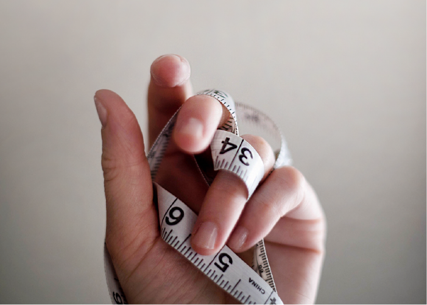
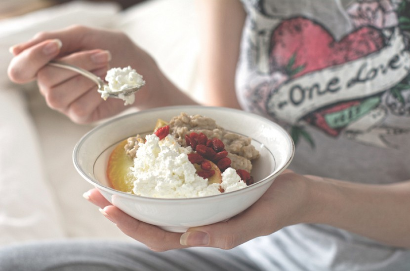
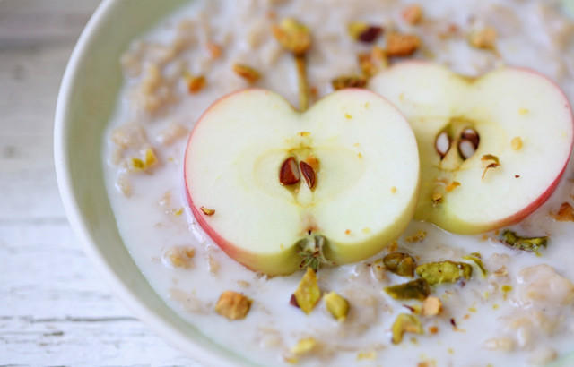
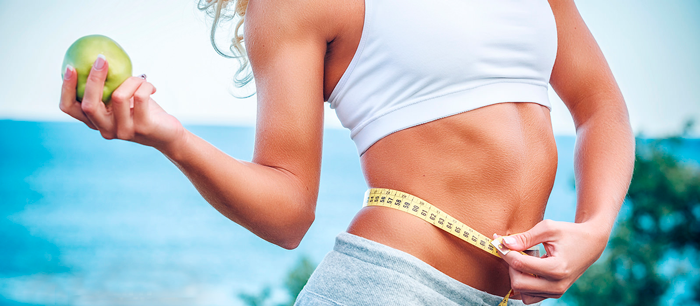

Blog / A diet of three products - a safe weight loss
A diet of three products - a safe weight loss
A diet of three products - a safe weight loss
Short-term diets allow you to bring a figure back to a norm and become a "star", who is accompanied with admiring looks of men and envious women. But most of the systems for weight loss, along with excess kilos, harm your health. The opposite result is guaranteed by a diet of 3 products. With a limited and low-calorie nutrition, a body receives the maximum amount of nutrients to prevent various diseases.
How to lose weight with the benefit for a body? I’m sure you asked this question many times. This diet of 3 products combines the benefit of oatmeal, apples and quark that’s why it just can’t harm you. There is no doubt in the effectiveness of this method. Such selection is not accidental - all these products are very useful and contribute to weight loss.
If you like quark, apples and oatmeal, you should know that these three useful products will help you to lose weight easy and quick. Many women, who are satisfied with their appearance and figure, wouldn’t against to lose 2-3 excess kilos, even if these kilos are excess only in their opinion.
You should use such methods only if you are sure that it’s safe for your health. If there are some serious diseases, you need appropriate nutrition on the advice of specialists. After completing the diet and restoring a body for one month, if you are sure that there is no discomfort and negative health effects, you can use another one-week diet on three products.
About the benefit of oatmeal, apples and quark
Oatmeal - a source of fiber, complex carbohydrates, minerals and vitamins. Food fibers normalize the activity of the intestine and relieve the feeling of hunger.
Oatmeal contains vitamins E, PP, group B. They contribute to the improvement of the structure of skin and calm the nervous system. The basis of the mineral composition is potassium and magnesium, improving the work of the cardiovascular system, phosphorus and calcium, strengthening the bone tissue. They are supplemented in small quantities with sodium, chlorine and sulfur. Silicon, that is in oatmeal, increases the elasticity of connective tissue, smooths skin, prevents the formation of wrinkles, speeds up metabolic processes, slows down aging. The product contains a large amount of fiber, thanks to that the work of the gastrointestinal tract is normalized.
It’s better to keep oatmeal in a refrigerator because at room temperature it loses some of its useful properties.
Quark - one of the most useful dairy products. In the process of its preparation, digestible protein and milk fat are excreted. It contains vitamins A, PP, C, E, B1, B2, B12, beta-carotene, amino acids, microelements of calcium, magnesium, phosphorus, sodium, potassium. Casein replaces animal proteins, amino acids prevent liver diseases, B vitamins - the development of atherosclerosis, calcium and phosphorus are needed to strengthen the bone system.
Quark - a stockpot of digestible protein and necessary fatty acids for a body. Due to the fact that protein food requires the expenditure of energy for its digestion, an additional stimulus is created for weight loss. Because proteins are the main building element of muscle tissues, even a low caloric diet with the presence of quark in it does not lead to flabbiness of a body.
All elements of quark are easily absorbed by a body, so the product is recommended for children and the elderly. In addition, it is necessary for the treatment of cardiovascular diseases, kidneys and liver, it is also indispensable for mental and physical exhaustion.
It is important to remember that you can eat only fresh quark. An overdue product can only cause harm to health.
Apples are 80-90% made of water that is necessary to cleanse a body. They fill a body with vitamins and minerals. They contain vitamins А, В1, В2, В6, С, Е, Р, carotene, pectins, organic acids, microelements of potassium, sodium, zinc, iron, calcium, magnesium, manganese, aluminum, vanadium, boron, sulfur, molybdenum, nickel, chromium, fluorine.
Due to fiber and pectins this useful product normalizes the activity of the intestine and removes cholesterol from the body. Pectin consumes toxins and poisons, that were created in intestines, cure the diarrhoea and coprostasis, prevents the formation of gallstones. Daily use of apples reduces the level of cholesterol in blood, slow downs the development of atherosclerosis. Apples are recommended for use when there is deficiency disease and anemia, and freshly squeezed juice acts as a general restorative. In addition, fruits normalize the metabolism, prevent aging of a body, restore the salt balance.
If you eat apples every day, you can stabilize the blood sugar level and normalize the metabolism.
A big quantity of phosphorus that is in apples stimulates the brain and strengthens the nervous system, so a glass of juice can save from insomnia. It’s better not to peel fruit, because it contains a large amount of pectin and fibers. Heat treatment is also undesirable.
Menu for the day with quark, apples and oatmeal
Breakfast: a portion of lean oatmeal porridge and a couple of apples;
Lunch: a portion of lean oatmeal with 1 teaspoon of natural honey and low-fat quark - 100 grams and apples - 3 pieces;
Supper: apples - 3 pieces and low-fat quark - 100 grams.
During the diet you can drink herbal infusions, any teas and still water. It is best to drink green tea and milk oolong. Every third day you can add 300 grams of green vegetables to the day's ration (preferably at noon but not at supper). Try to keep the amount of water per day about 1.5-2 liters. 1 cup of liquid must be drunk on an empty stomach, the rest - between meals. This will allow a body to get rid of toxins and also to satisfy not only thirst but also the feeling of hunger.

Nutritionists say that the menu of this diet contains all the necessary elements, but also recommend to add low-fat milk or any sour milk drink. This will only increase the benefit of the diet, virtually without affecting the result.
Some nutritionists recommend three meals a day but it's better to eat 5-6 times a day. This way limited nutrition will be easier to tolerate, the stomach will not experience heaviness because of large amounts of food.
Porridge should be cooked on water. Minimal heat treatment will save useful elements. It is enough to pour the groats with boiling water, leave for a night and wrap up a pan. It’s ideal for a thermos with a wide "neck".
On the 3rd, 6th and 9th days of the diet it is necessary to add a vegetable salad made of tomatoes, cucumbers, cabbage and potherbs. It is better to cook dish for lunch or as an afternoon snack, the salad should be added to the main menu.
If you are hungry, you can drink a glass of kefir or natural yogurt for the second dinner. The result of this will not be worsen.
The diet of three products has been known for a long time - it allows you to lose weight without putting a body into a sparing mode. Weight goes off stably, and to keep the result is not too difficult - enough to eat in a balanced way and rationally.
Not to have spoiled hair, nails, skin, lack of energy because of the diet, it is necessary to take vitamins.
Duration and results
As the main purpose of the diet is to get rid of excess weight, it is recommended to follow the basic rules to achieve a better result.
The duration of the diet of three products is 7-10 days. The procedure lasts no longer than 10 days. During this time you can lose up to 10 kilograms of fat deposits. The more kilos you have, the faster the process goes. You can repeat the session only after a month.
You can repeat it at least in a month. Weight loss is 0.5-1.5 kg per day (the result depends on the initial weight and on the timing of weight loss - the longer you are on a diet, the slower the weight goes).
The advantages of the diet of three products:
1) The diet is not a "hungry-diet", it’s allowed to eat rather much, besides, quark is a source of protein, and oatmeal is a complex carbohydrate, due to this there is always satiety.
2) The diet of 3 products is one of the few that not only does not harm digestion but rather sets it up, especially because of oatmeal which envelops the walls of the stomach, normalizes the work of the intestine, positively affects the pancreas. Quark is also very useful product for our digestion (of course, if you are all right with the tolerability of lactose). But there is one thing: do not eat too many apples.
3) As a rule, this diet do not cause problems with the state of health as well as a strong desire to break.
4) A big plus is that the diet of 3 products do not affect the sleep, because the most unpleasant thing in many diets is "hungry", when you lie, can’t fall asleep and count sheep.
After 10 days, you will be certainly satisfied with the result: the scales will show the wish figure, and your favorite dresses will be a good fit again (maybe you even have to reconsider the wardrobe and complete it with some new clothes). To save a shape, you'll have to select a menu. The food should be varied but healthy. Spicy, smoked, sweet dishes should be eaten occasionally. The usual diet includes vegetables, fruits, fish, boiled or stew meat, dairy and seafood, cereals, soups, juices. In addition to a beautiful figure, a well-groomed appearance is required. To smooth wrinkles and to give a fresh blush, you can make face masks on the basis of all the same 3 products and it will help you to make skin "velvet". They can be mixed together or applied separately. The grated apple, quark, diluted with apple juice, oatmeal, swelled under the influence of boiling water will be good for a mask. You can add ½ teaspoon of cosmetic oil (grape seed, apricot, peach, wheat germ) to each mask. Then after the procedure, you do not have to apply moisturizing or nourishing cream.
There is only one minus of the given diet it’s monotony. Even the big lovers of oatmeal, quark and apples by the end of the week can be bored by eating the same things because the products are quite blank tasted and dietary.
This diet is simple and has affordable products. Weight on the diet of 3 products does not go quickly as on more hard diets but it does not return. The diet will help you to "unload" after holidays. It consists of delicious foods, but who knows, maybe you will be bored of them quickly.
